Week 9: Exploratory data analysis
Software Development: Programming and Algorithms
Delivered by: Dr Joseph Aylett-Bullock
0:00. Start the five-minute recap immediately. Two-hour route: 0–5 recap; 5–7 loop; 7–13 orientation; 13–24 categorical; 24–36 numeric; 36–47 flags; 47–55 groups; 55–65 break; 65–83 relationships; 83–103 scaling; 103–110 breadth; 110–117 clinic; 117–120 exit. Several slides are short states in one explanation. Keep activities within these timings.
Last week: data analysis workflow
Choose a source Sensors, webpages
Bristol traffic data Read documentation Fields, units, dates, licence, filters, pagination
What does one record mean? Retrieve and save Request the data (downloads, APIs, webpages). Check status. Preserve the original.
Response and saved JSON Parse, check, process JSON → records → DataFrame. Check and group.
A site/date/hour table Use the data Explore, visualise, communicate, model
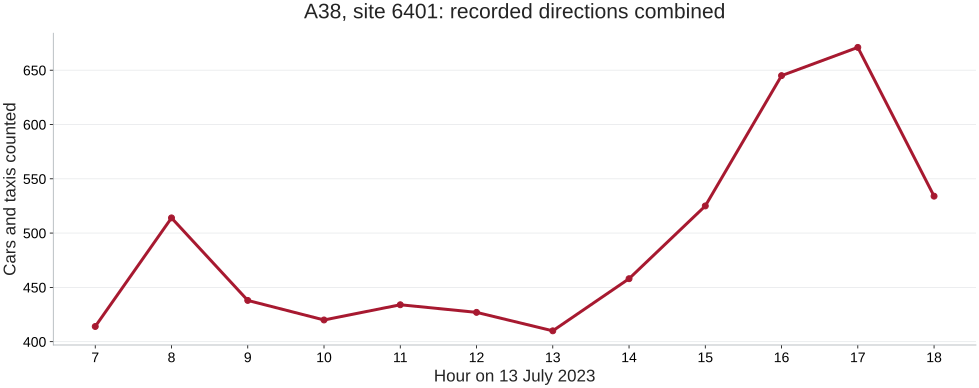
0–3 min including title. Reconstruct Week 8 verbally. Ask before revealing pagination answer. GET returns a Response; parsing gives Python objects. Keep source capture and processed data separate. Source: Week 8 workflow, API and pagination slides. The saved traffic response had one page, but that is a property to check.
Exploratory data analysis
Data and meaning Question Summaries and plots Investigate Make a justified change Then look again
7–8 min. EDA is an early and iterative part of analysis. A plot can change the question, grouping or transformation. We are exploring evidence, not proving causality or performing formal hypothesis tests today. Original slides 3, 5, 7; Seltman, Experimental Design and Analysis, Chapter 4: https://www.stat.cmu.edu/~hseltman/309/Book/chapter4.pdf
What graph?
From Data to Viz — Yan Holtz and Conor Healy .
Data type and meaning
Count-point ID: 6401
A label identifying a site
Nominal category
Direction: N
A category
Nominal
Cars and taxis
A count
Quantitative, discrete, ratio
Annual NO₂ concentration
A measurement
Quantitative, continuous, ratio
Low / medium / high
An ordered grouping
Ordinal; thresholds need defining
Types of exploration
Numerical or tabular
Graphical
One variable
Frequencies, centre, spread
Distribution, composition
Two variables
Cross-tabulation, group summaries, correlation
Comparisons, relationships
Several variables
Grouped summaries, matrices
Colour, size, facets, maps, networks
Univariate: one variable. Bivariate: two. Multivariate: several together.
Graphs can help us explore
How do counts vary?
Dots, histogram, boxplot
Which group has higher typical counts?
Group distributions, summary dots
How does the observed day change?
Points connected in time, line plot
Where were counts measured?
Point map
Which view would you choose to look for unusual values? What might it hide?
No one right answer. A histogram shows shape but bins observations. A boxplot flags extremes but hides detail. Individual points retain detail but can overlap.
13–15 min. Take two suggestions and ask for the question each serves. The poster offers starting points, not a unique answer. This is the short opening vote; do not let it consume the later slow investigation time.
Frequencies and proportions
What directions occur in the survey records ?
import pandas as pd= pd.read_csv('data/bristol_traffic_2023.csv' )'direction' ] = (traffic['direction' ]'string' ).str .strip().str .upper()'Missing' ))= traffic['direction' ].value_counts(dropna= False )= pd.DataFrame({'records' : counts,'proportion' : counts / len (traffic),'percent' : 100 * counts / len (traffic)print (summary.round (3 ))
records proportion percent
direction
W 252 0.269 26.923
E 240 0.256 25.641
S 228 0.244 24.359
N 216 0.231 23.077
Read the saved CSV, select the direction field, standardise whitespace/case, give missing directions an explicit category, then count and divide by the number of records. This does not drop observations or count vehicles. The supplied file has no missing directions. Show the output after students predict its columns. The code is self-contained and is executed in both builds.
Comparing categories or parts of a whole
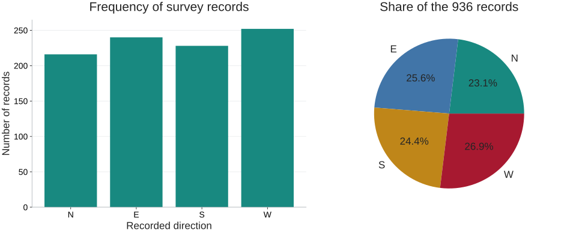
17–18 min. The same categories support different questions. Do not teach “categorical means pie”. Here compass order has a meaningful interpretation, so we keep it. For a pure ranking question sort bars by magnitude. The source PDF card 13 allows pies for very simple scenarios.
Which one shows a bigger difference?
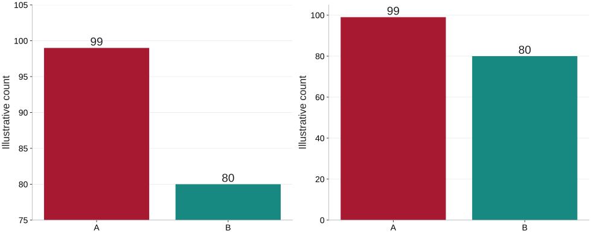
Always show axis baselines.
Compare the bar lengths before discussing the labels. Both panels contain 99 and 80. Reveal the bottom sentence. Explain it as: make the baseline and scale visible; bars should normally start at zero because their length encodes magnitude. It is not a rule that every line or scatterplot axis must start at zero. The following real examples take about three minutes in total.
What does this baseline do?
How would the impression change if the bars started at zero?
Supplied screenshot: steel-production post and reader context .
A short baseline discussion. The screenshot includes a reader context note, so use it as a worked example rather than a withheld quiz. The plotted range is 80.2–81.8 Mt. Focus on visible axis truncation; do not claim independently verified steel totals, infer intent, or equate production changes with the success of a policy. A zero-baseline replot would preserve the ordering but greatly reduce the apparent ratio of bar lengths. This is a political social-media graphic, not a television-news broadcast.
Election leaflets: what is being compared?
Check the election, the missing categories and the meaning of bar length.
Original leaflets reproduced in Full Fact, “Lowering the bar”, 28 November 2019 .
Keep this to 90 seconds. Lib Dem example: selected a police and crime commissioner election rather than the parliamentary election, and omitted an independent candidate on 17.9%. Labour example: the apparent Labour/Conservative bar ratio was about 0.8 although actual 2017 vote shares were 30.5% and 58.1% (ratio about 0.525); a striped ambition arrow extended above the Conservative bar. These are two different distortions: selective context and distorted visual lengths. Avoid generalising about every chart from either party. The source is Full Fact’s documented 2019 examples. Optional correct comparison: assets/suffolk-correct.svg.
When the positions contradict the numbers
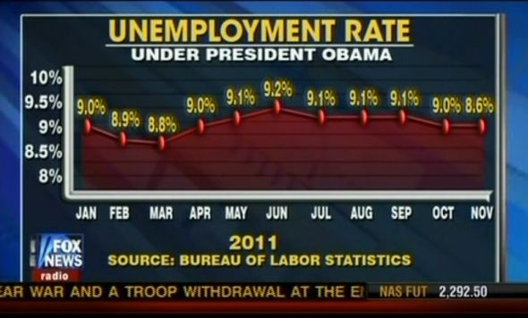
Compare March’s 8.8%, October’s 9.0% and November’s 8.6%.
Fox News, 12 December 2011; reproduced by Nathan Yau, FlowingData .
Thirty-second visual check. November’s label is lower numerically but its point is at roughly the same height as October and higher than March. This is an inconsistent mapping of values to vertical position, not merely a non-zero baseline. Do not describe this particular graph as a reversed axis. Correctly plotting the labelled values gives a fall from 9.0% to 8.6%. Source documented by FlowingData and Media Matters. No claim about why the graphic was produced.
Two categorical variables
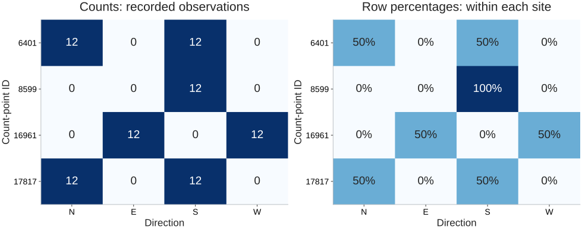
Counts and row percentages answer different questions.
19–21 min. Original cross-tabulation learning outcome. Each cell counts survey records for a site and direction. Row denominator = records at that site. Different recorded directions can reflect road/site design, not missing observations. A heatmap is a view of a contingency table. Ordinal rows/columns should keep meaningful order; reorder nominal labels only when it aids comparison.
Other views of the same table
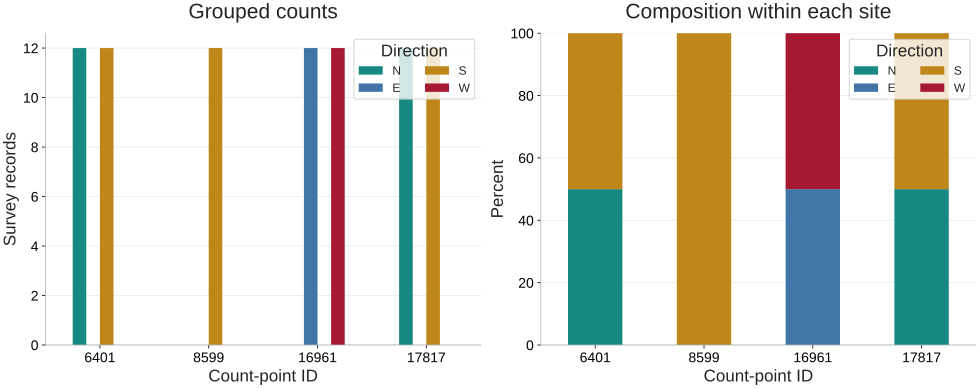
Grouped bars help compare counts. Stacked bars emphasise composition.
21–23 min. Students identify one question for each view. Interior stacked segments lack a common baseline. Explain grouping/reshaping into an analysis table; do not confuse normalising rows into percentages with scaling a numerical feature for modelling.
Numerical variables
Poster: Yan Holtz and Conor Healy, From Data to Viz
23 min. Whole poster → numeric tree → one numeric variable. Recognise histogram, density and boxplot as different summaries. Introduce numerical summaries alongside graphical views.
What does a typical count look like?
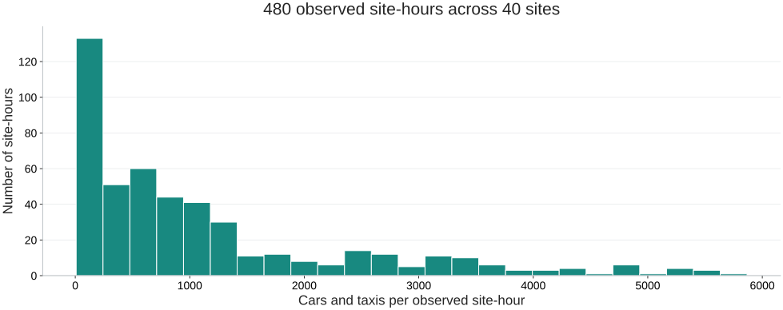
Centre, spread, shape, modes and unusual values.
23–25 min. Read axes and observation unit first: 480 site-hours across 40 sites, directions combined where recorded. This is an observed sample distribution, not automatically the population distribution of all Bristol traffic. Large sites may form the right tail for entirely real reasons.
Centre and spread
= hourly['cars' ]print (cars.describe().round (1 ))print ('Median:' , cars.median())print ('Range:' , cars.max () - cars.min ())print ('Sample variance:' ,round (cars.var(ddof= 1 ), 1 ))
count 480.0
mean 1138.0
std 1272.4
min 8.0
25% 183.8
50% 679.0
75% 1422.2
max 5867.0
Name: cars, dtype: float64
Median: 679.0
Range: 5859
Sample variance: 1618942.5
Mean / median / mode describe centre. Range / variance / SD / IQR describe spread.
25–28 min. Mean = sum / n; median = ordered middle; mode = most frequent value, possibly several. describe gives sample SD, min, quartiles and max. Variance is squared spread; SD returns to original units. Explain sample denominator n−1 briefly; reference slide has formulas. IQR is Q3−Q1, the spread of the middle 50%. Mean/SD and median/IQR answer related but different questions.
The impact of one point
28–31 min. Before each click invite predictions, then explain the displayed worked example. The explicit assessment quizzes are separate. Mean and SD respond strongly; the median is robust here. This introduces outliers in the graphs, not as a later disconnected topic. Mean/median ordering is not a universal theorem about every distribution.
Distribution shape
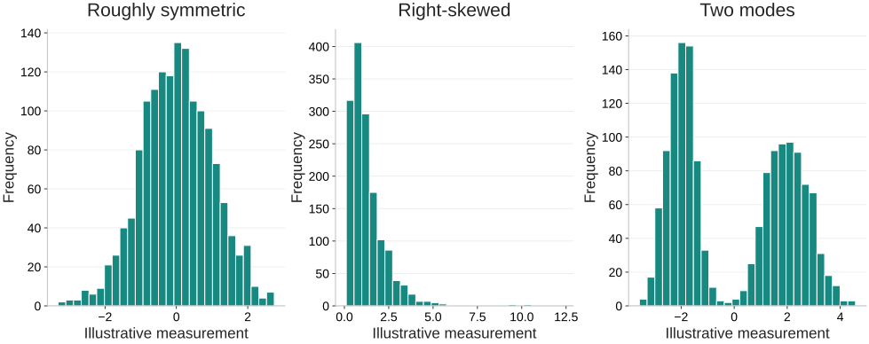
The same centre and spread can conceal different shapes.
31–33 min. Symmetry; right tail/positive skew; mention left tail/negative skew as the mirror direction. Modes may be multiple. Mode of a continuous distribution is usually inferred from a density/histogram and depends on estimation choices. Normal is one symmetric shape, not a synonym for all symmetric data. These distributions are synthetic examples.
Histogram bins
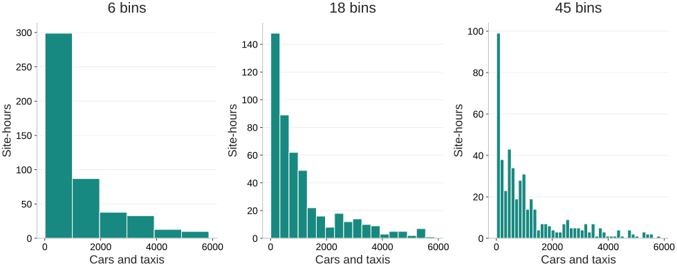
Check whether a finding holds up at different bin choices
33–35 min. Ask where a cluster appears/disappears. No observations changed. Too coarse hides shape; too fine shows noise. Density plots introduce a bandwidth choice. All histograms here use equal-width bins; unequal-width histograms need density/area interpretation rather than treating raw bar heights as comparable frequency.
Discretisation changes the representation
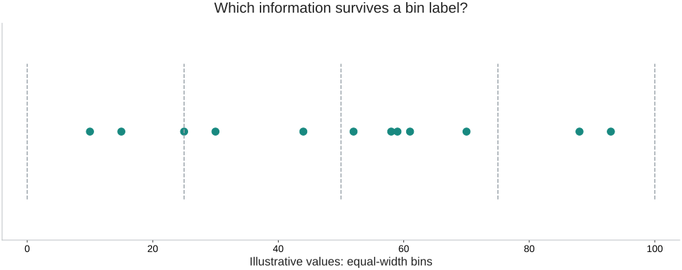
A bin can become a label: low / medium / high .
Equal-width bins and equal-count bins answer different needs. Replacing values by bin means, medians or boundaries loses information too.
35–38 min. Reconnect to Week 8. Display binning can be changed without modifying raw data. Storing only a category loses precise measurements. Recall pandas cut versus qcut; bin representative methods only brief recall. Defined domain thresholds differ from arbitrary bins. Avoid calling invented cutoffs official congestion thresholds. Two-minute pairs: name one useful simplification and one cost.
Building a boxplot
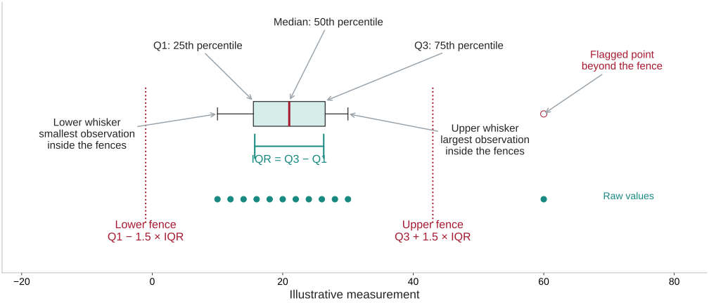
The box shows Q1 to Q3. The line shows the median. Points beyond the whiskers are candidates for investigation.
38–41 min. Build verbally from sorted values: quartiles, IQR, fences and observed whisker endpoints. Five-number summary is min/Q1/median/Q3/max, but the Tukey whiskers used here are not necessarily min/max. Fences at Q1−1.5IQR and Q3+1.5IQR. Different software quartile conventions can affect tiny datasets. Original slides 19, 53–54. Source guidance: https://www.data-to-viz.com/caveat/boxplot.html
The 3σ rule has an assumption
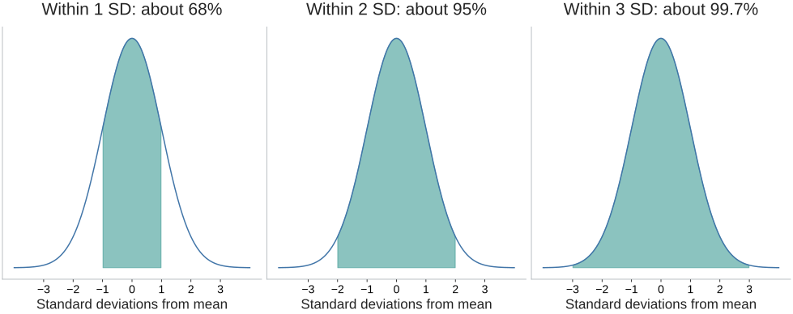
These percentages describe a normal distribution .
41–43 min. About 68%, 95%, 99.7% of a normal population lies within 1/2/3 population SD of its mean. A sample mean ± 3 SD flag is a heuristic, not a universal outlier test. A skewed distribution can have legitimate long tails. Mean and SD may themselves be affected by extremes. Original 50–51 sample arithmetic retained in references. NIST outlier guidance: https://www.itl.nist.gov/div898/handbook/eda/section3/eda35h.htm
Identifying outliers
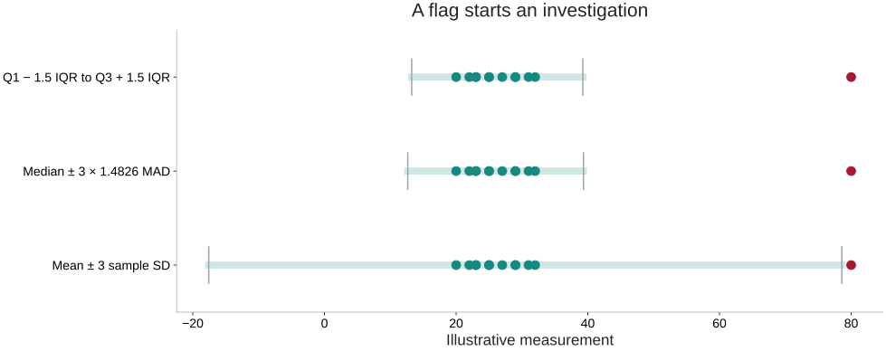
IQR: resistant to a few extreme values, interpretable through the boxplot and no normality requirement for computing it. But 1.5 is a convention, skewed tails can be legitimate, and quartile conventions/small samples affect flags.
3 sample SD: simple, familiar and connected to the normal-reference 99.7% rule. But mean and SD are sensitive to extremes (masking), and skew or heavy tails invalidate a universal false-alarm interpretation. The 99.7% statement uses population parameters under a normal model, not a guarantee for sample thresholds.
Hampel: centres on the median and uses the median absolute deviation; robust against a minority of extreme values. The factor 1.4826 makes MAD normal-consistent as a scale estimate; it does not make the observations normal. Limits: zero MAD in repeated/discrete data; small samples; asymmetry; reduced efficiency for clean normal samples.
All three flag candidates for investigation. Multiple extremes may mask one another, and genuine unusual values should not be deleted automatically. In this illustration all three flag the red value. Define the median, then absolute deviations, then their median before using the final inequality.
An outlier needs context
A survey count lies beyond a boxplot whisker. What should happen next?
Delete it immediately.
Check the source, units, grouping and circumstances.
Replace it with the mean automatically.
Start with 2. Correct a verified error where possible. Keep real unusual observations. Exclusion or imputation needs a reason and a recorded method.
A faulty sensor and a real rare event can produce similar-looking points.
46–48 min. Include errors and scientifically interesting or operationally important events such as fraud. Preserve raw values; annotate decisions; compare sensitivity to questionable points. Imputation adds assumptions and can suppress variability. Do not remove a genuine extreme merely to make a model look better. Univariate anomaly = one variable’s distribution; multivariate follows after break.
A numerical variable across groups
Poster: Yan Holtz and Conor Healy, From Data to Viz
48 min. Zoom whole → mixed → grouped numerical. The categorical field defines groups; the numeric field varies within each. The same numeric measurements may have different distributions depending on grouping.
Group means can hide the distribution
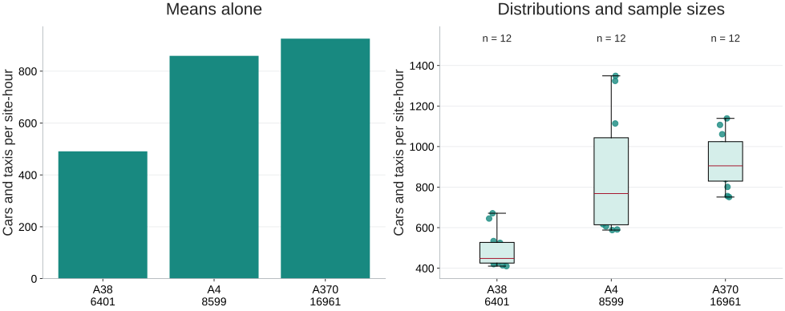
Show the distribution and n when they affect the comparison.
48–52 min. Ask what we learn on the right that is invisible on the left. n counts observed site-hours, not independent random samples from every possible day. Sites may have different survey dates. Error bars need explicit definitions (SD, SE or confidence interval); they do not show the full distribution. An outlier pooled across all sites may be ordinary for one site.
Violin and swarm plots
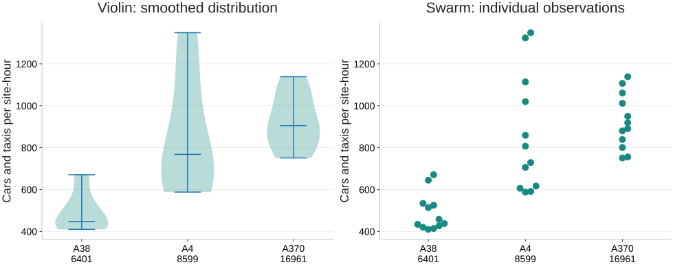
Which view would you choose for these small groups, and why?
Individual points make the small samples visible. A violin helps inspect shape, but its smoothing can suggest detail the data do not support.
A violin plot is a smoothed estimate of a numerical distribution, drawn as mirrored density curves around a central line. At a given y-value, a wider section means greater estimated density there. Read it as a histogram smoothed and reflected, not as the outlines of observed points. The smoothing bandwidth controls how much detail appears; too little can create spurious bumps and too much can hide modes. The violin may extend into sparsely supported regions. The centre marker here shows the median; inspect the plotting convention rather than assuming every violin displays quartiles. Width/area normalisation varies between implementations, so width does not automatically mean a larger sample. With only 12 site-hours per group, show the points too.
Swarm offsets are only a way to separate nearby observations. They are not another measured variable. Give pairs a minute to compare the two views. Take the planned ten-minute break after this slide; the user removed the separate break slide, so do not reinsert it.
Two numerical variables
Poster: Yan Holtz and Conor Healy, From Data to Viz
65–66 min. Notice ordered/unordered and few/many points in the tree. Scatter, connected scatter, density and marginal distributions answer different questions. The tree is a starting set, not an instruction to draw every option.
Cars and bicycles together
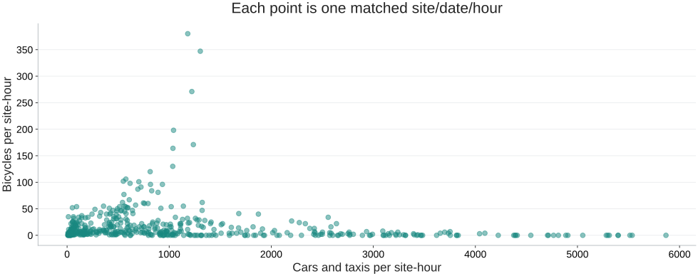
Describe the shape, direction, clusters and unusual observations before calculating a summary.
66–69 min. One point = matched cars and bicycles from same site/date/hour. Raw records were grouped by those keys. Do not correlate unrelated rows joined only by position. Have students describe the cloud without causal language. Different sites and times can contribute common influences; this is exploratory, not a causal study.
Overlapping points hide observations
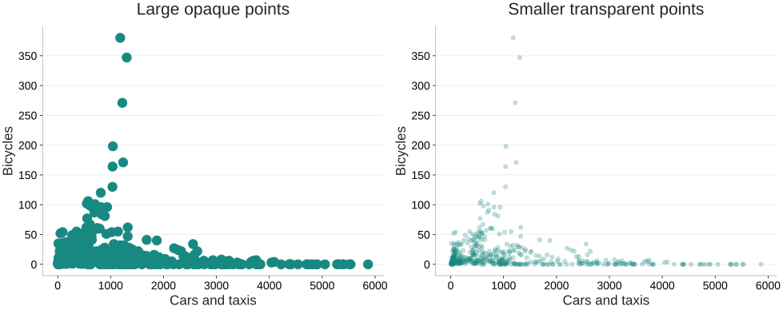
Smaller markers, transparency, facets, or density/hexbin views can help.
69–70 min. Same observations, different readability. More transparent points do not correct sampling bias. Point size should be explained when it encodes a value. Aspect ratio can alter visual impression of slope; numeric r does not change when you stretch the plotting window.
Direction and strength
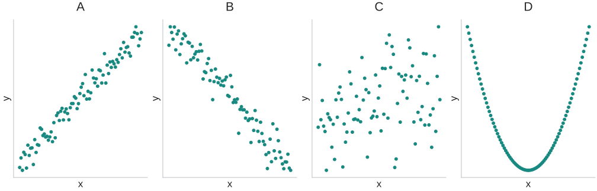
For A–D, describe the pattern. Which might have Pearson r near zero?
A: strong positive. B: strong negative. C: weaker positive. D: clear curved relationship, but Pearson r is near zero.
70–73 min. Two-minute prediction and brief reveal. Pearson r measures linear association and ranges −1 to +1. Sign gives direction; magnitude describes linear strength. Avoid universal “strong” cutoffs. D is symmetric y=x²: zero correlation does not imply independence. The handout retains unlabeled patterns and question, not answer text.
Pearson correlation
= hourly[['cars' , 'bicycles' ]]print (paired.corr().round (3 ))
r = ∑ ( x i − x ¯ ) ( y i − y ¯ ) ∑ ( x i − x ¯ ) 2 ∑ ( y i − y ¯ ) 2
cars bicycles
cars 1.00 -0.13
bicycles -0.13 1.00
Compare deviations from each variable’s mean. Always inspect the scatterplot too.
73–75 min. Same matched site-hours. Walk through sign of paired deviations rather than full arithmetic. r undefined if one variable is constant. Sample r is descriptive; no claim of independent observations or significance here. Original formula retained. SciPy: https://docs.scipy.org/doc/scipy/reference/generated/scipy.stats.pearsonr.html
A strong correlation is not the whole story
Four datasets. Pearson r ≈ 0.816. Fitted line: y ≈ 3 + 0.5x.
F. J. Anscombe (1973), Graphs in Statistical Analysis .
Allow 45 seconds. Show the shared correlation and fitted line first; ask what students expect, then reveal all four plots. The fourth example obtains its association from one high-leverage point; a strong r alone does not validate the line as a useful model. These are constructed teaching datasets, not evidence that a published scientific finding was fabricated. Lead into the funny dinosaur example.
Same statistics. A different animal.
Nearly the same means, SDs and correlation. What could the plots look like?
These examples have Pearson r ≈ −0.06, not a strong correlation.
Alberto Cairo’s Datasaurus; Matejka & Fitzmaurice (CHI 2017), Same Stats, Different Graphs .
About 45 seconds. The remembered animal is a dinosaur rather than a duck. A scatterplot already reveals it; connecting unrelated rows is unnecessary. The published data have means about 54.26 and 47.83 and sample SDs about 16.76 and 26.94; their r values are near -0.06. Small numerical differences depend on rounding/convention. The authors deliberately generated different shapes while keeping summaries nearly fixed. This is about insufficiency of summaries, whereas the preceding Anscombe example covers strong correlation and leverage. Both are worked demonstrations, so their plots remain in the student handout.
Curves and groups change the interpretation
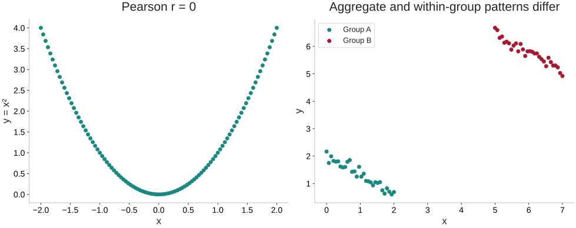
75–77 min. Left: r=0 does not mean no relationship or independence. Right: within each group y tends down as x rises, but combining groups creates an upward pattern. These are designed examples, not claimed findings in Bristol traffic. Ask what additional grouping would be worth checking in our traffic data.
Correlation and causation
Sunny weatherA possible common influence
↙
↘
A relationship between two measurements does not establish that changing one causes the other.
Illustrative explanation. In the traffic data, site characteristics and time of day are candidate common influences.
77–79 min. A causal effect is a change in an outcome due to intervening on a cause, not every observed change occurring together. This is a hypothetical diagram, not a citation of a study. Original ice-cream/homicide example replaced because no verifiable study was supplied. Other explanations include reverse causation, common causes, selection and chance; don’t need a causal inference lecture.
Ordinary alone, unusual together
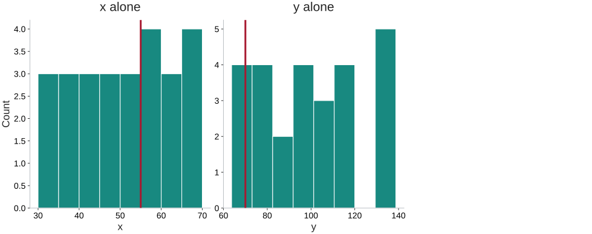
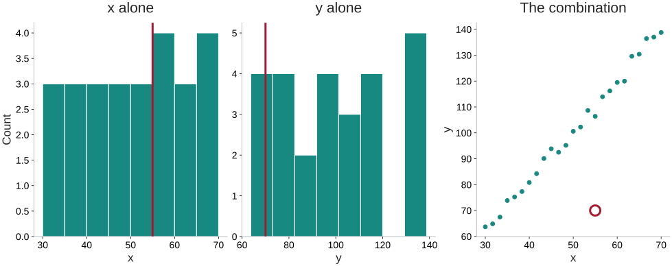
A multivariate outlier concerns a combination of variables.
79–82 min. Red value is ordinary within each marginal range but off the relationship in the joint view. Ask what a pair of independent univariate rules could miss. This is illustrative, not a fitted anomaly detector. Context can include group and time as well as multiple numerical features. Unusual points can affect correlation and model estimates. Full automatic multivariate detection is beyond today.
A relationship is a reason to investigate
Suppose cars and bicycles are positively correlated in another sample. Which conclusion is justified?
More cars cause more cycling.
The two counts show positive linear association in this sample.
Removing unusual points will establish causation.
Option 2: check the scatterplot, grouping, observation units and sampling. Neither correlation nor deleting points establishes causality.
82–83 min. Quick checkpoint before slower scaling sequence. Source original correlation/causation and outlier objectives consolidated.
What should the comparison mean?
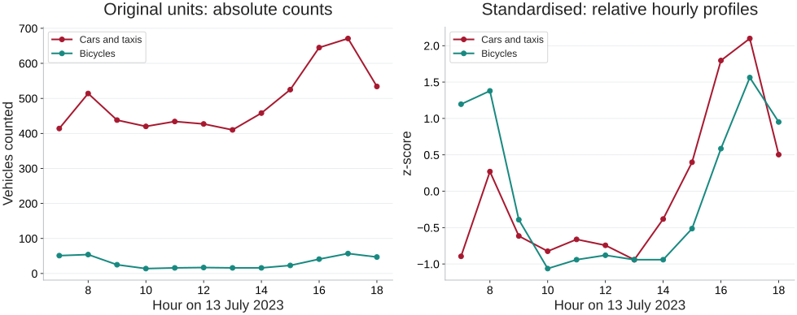
Absolute volumes and relative hourly patterns are different questions.
83–86 min. Start with a reason for changing scales. Cars have much larger counts; using original units is correct for absolute volume. For a profile question, centre/scale may be useful but removes magnitude meaning. Do not invent an association using independently tuned dual axes. Small aligned panels in original units are also a good alternative. Standardisation parameters here are computed separately per variable over this survey day, ddof=0.
Distance depends on scale
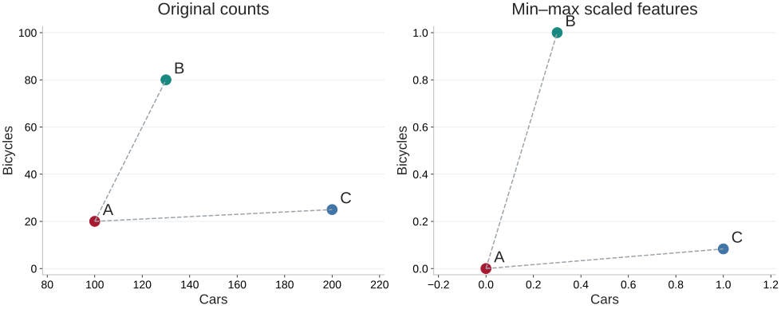
Which point is closest to A? Is the answer unchanged after scaling?
In original units B is closer. With these min–max scaled features C is slightly closer. Scaling changes each feature’s contribution to distance.
86–89 min. Illustrative points A=(100,20), B=(130,80), C=(200,25). Raw distances AB≈67.1, AC≈100.1; scaled AB≈1.044, AC≈1.003. Display uses equal aspect so geometry matches distance. Cars/bicycles counts have same nominal unit but different ranges; different measurement units can have the same issue. Useful motivation for nearest-neighbour and other scale-sensitive methods; no ML algorithm tutorial needed.
Min–max normalisation
x ′ = x − min ( x ) max ( x ) − min ( x ) x' = \dfrac{x-\min(x)}{\max(x)-\min(x)}
100
Minimum
0
200
Halfway
0.5
300
Maximum
1
For another interval [a, b], use a + ( b − a ) x ′ a + (b-a)x'
89–92 min. Trace subtract then divide with one observation. [−1,1] is a common alternative: a=−1,b=1. Fitted min/max map observed training extremes to the endpoints; new observations can fall outside [0,1]. Constant feature needs handling because denominator zero. This form of normalisation is feature rescaling, not normality or percentages.
Standardisation
z = x − mean standard deviation z = \dfrac{x-\text{mean}}{\text{standard deviation}}
z = 0: at the reference mean.
z = 2: two reference SDs above the mean.
z = −1: one reference SD below it.
The transformed reference data have mean 0 and SD 1.
Their distribution can still be skewed or multimodal.
92–95 min. Same idea of deviations used for 3σ, now as a transformation. Explain original units cancel. Consistent SD convention needed. No normality guarantee, no guarantee of model improvements for all methods. Scaling can improve numerical conditioning/optimisation for relevant algorithms. Training/held-out separation next reference note. Source: https://scikit-learn.org/stable/modules/preprocessing.html
Calculating both transformations
= np.array([100. , 200. , 300. ])= (x - x.min ()) / np.ptp(x)= (x - x.mean()) / x.std(ddof= 0 )print ('Original:' , x)print ('Min–max:' , minmax)print ('z-scores:' , np.round (z, 3 ))print ('z mean / SD:' ,round (z.mean(), 3 ),round (z.std(ddof= 0 ), 3 ))
Original: [100. 200. 300.]
Min–max: [0. 0.5 1. ]
z-scores: [-1.225 0. 1.225]
z mean / SD: 0.0 1.0
This worked example uses population SD (ddof=0) consistently.
95–97 min. Run/trace this worked example. ddof=0 matches usual feature-scaling implementations; pandas std defaults to sample ddof=1. Use same reference parameters for all observations being compared. In ML fit on training data only and reuse on held-out/new observations. Never rescale each held-out point separately.
The same observations on different scales
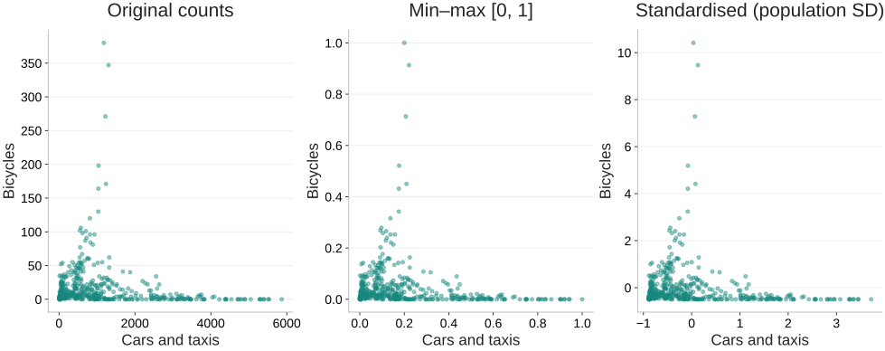
Axis labels and units change. Scaling alone does not remove unusual points or create normality.
97–98 min. Autoscaled panels retain the relative shape; inspect axis numbers. Positive affine rescaling of either variable also leaves Pearson r unchanged. Joint Euclidean geometry with comparable axis units can change, as our distance example showed. Distinguish a display range change from transforming feature values.
Extreme values affect the scale
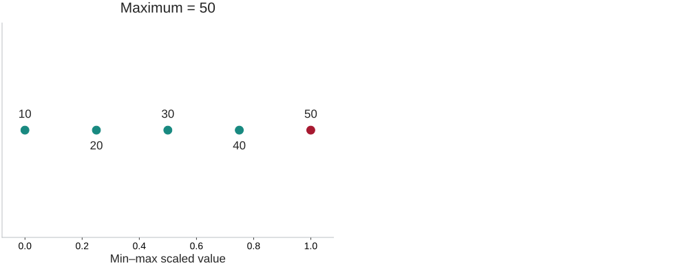
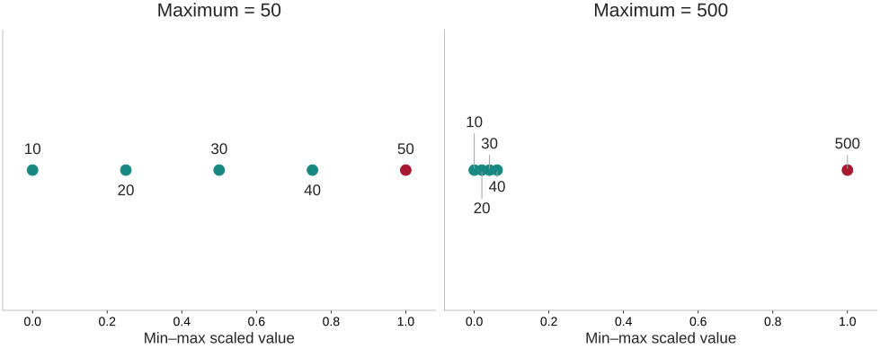
An extreme maximum compresses the other values. Mean/SD scaling is sensitive too.
98–100 min. Ask pairs why positions changed despite first four observations remaining identical. Two minutes including debrief. Scaling is not an outlier treatment by itself. Median/IQR-based robust scaling is a short signpost. Log transforms/axes can help inspect skew but require explicit treatment of zero; don’t add another method lesson. If no valid reason to transform, retain original units.
Decimal scaling and different meanings of normalise
Decimal scaling: choose a power of ten so the maximum absolute scaled value is below 1.
[ 120 , 450 , 900 ] / 1000 = [ 0.12 , 0.45 , 0.9 ] [120,\ 450,\ 900] / 1000 = [0.12,\ 0.45,\ 0.9]
Divide counts by a total
Composition / proportions
Divide by population or exposure
A rate for a stated denominator
Rescale a numerical feature
Range or measurement scale
100–102 min. Decimal scaling explicitly named in original. Formula x’=x/10^j with smallest suitable nonnegative integer j; do not claim fills [0,1] or compare with standardisation. Values may be negative. Ten-second optional callback: duck RGB /255 uses a known physical storage range, not observed min/max. Distinguish map rates and proportions from feature scaling.
Several variables
Poster: Yan Holtz and Conor Healy, From Data to Viz
103 min. Very brief return to larger tree. Correlation matrices, heatmaps, parallel coordinates and dimensionality reduction appear as further possibilities; don’t attempt to teach them all now. Adding many encodings is not automatically better than facets.
Colour, size and facets
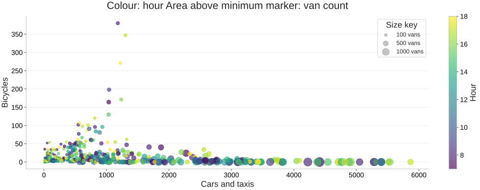
103–105 min. Decode x,y,colour,size one at a time. Marker area above a minimum size is proportional to vans; explain the baseline in legend/title. Quantitative colour uses a sequential scale; categories need distinct colours; avoid rainbow and colour-only distinctions. Smaller multiples can be clearer than more encodings. Original Gapminder example retained next as a quick reference to time.
Separate the comparisons
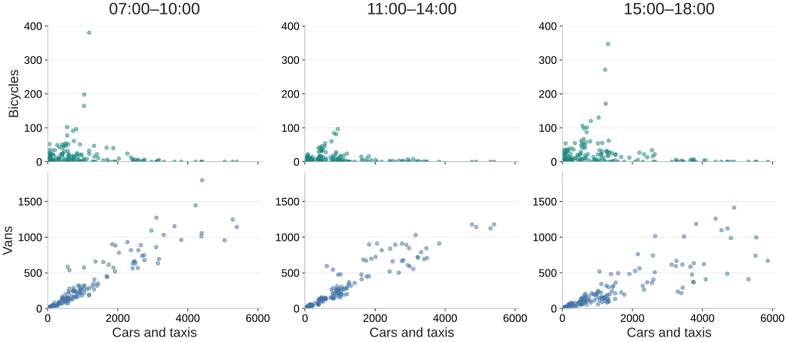
Same observations and variables. Time in columns; vehicle type in rows.
Retain the preceding bubble chart as the before view. This version retains all 480 observations and all four variables: cars on x, bicycles/vans on y, hour as three declared bands. No points are removed and no group averages replace them. Position is easier to compare than bubble area, and time bands remove the colour-decoding task. All panels share the cars scale; each row shares its own y-scale. The trade-off is that exact hour is binned into 07–10, 11–14 and 15–18 rather than individually encoded. These are observed survey hours across sites/dates, not continuous monitoring of one day.
Time, location and connections
Poster: Yan Holtz and Conor Healy, From Data to Viz
105–106 min. Three brief camera moves. Time supplies order, maps supply location, networks need relationships/edges. Preserve meaningful time spacing and gaps; don’t connect unrelated sites. Too many lines can be replaced by facets/highlights. Holtz cards 09, 53 and 54. This is a breadth signpost, not three new long lessons.
More dimensions in motion
Hans Rosling / Gapminder. Example retained from the original Week 9 slides.
106–107 min. Spend at most a minute decoding this example. It is a reused source visual, not new calculated evidence. Keep local animation/still available so no network visit is needed. Consider whether facets or selected years would be easier to compare. No need to maximise dimensions just because we can.
Geography or ranking?
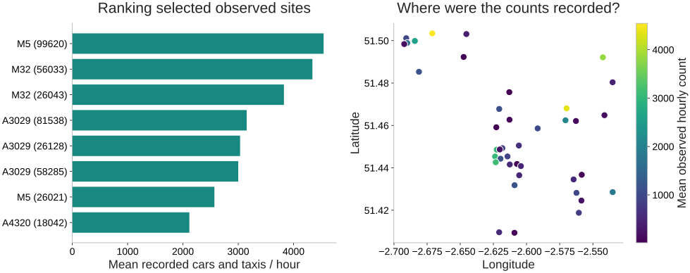
107–108 min. A point map shows measured locations; no interpolation or unobserved-road inference. Different survey dates/coverage limit comparisons. For choropleths think counts versus appropriate population/exposure rates, but don’t normalise point concentrations blindly. Missing data must be distinct from low values. Annual NO2 map is kept as separate reference, not joined to hourly traffic. Our map is a coordinate scatter, not a supplied basemap.
Connections need edges
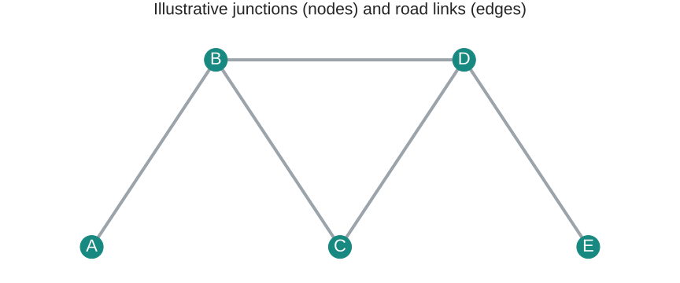
Edges: A–B, B–C, C–D, D–E, B–D
A connection diagram shows links. A flow diagram can encode quantities moving along links.
108–110 min. Explicit illustrative network, not inferred from our count-point CSV. Coordinates identify positions but do not define road connectivity or origin–destination traffic. Source original connection/network lesson retained. Sankey widths need meaningful conserved/defined flow quantities. Nodes and edges are a different data structure from one list of numeric measurements.
Chart clinic
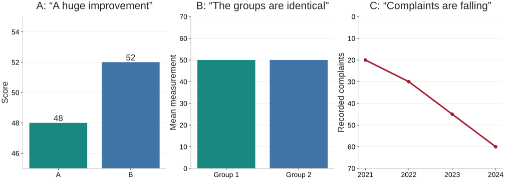
For each graph: what impression does it give, what is missing or misleading, and how would you redraw it?
Illustrative data. Work in pairs; take one minute per graph.
110–117 min. Give pairs one minute per graph, then discuss. A: values 48 and 52 but baseline45 magnifies the bar-length ratio; use zero baseline and describe the 4-unit difference or 8.3% relative increase. B: equal means do not establish identical distributions or sample sizes; request raw values, n and a distribution plot. C: counts rise20→60 but the y-axis runs downwards while the headline says falling; restore conventional direction and match title to the numbers. Note that reversing an axis is not universally invalid (depth, rank), but this direction/headline combination misleads. These are classroom constructions and not claims about any real institution. Keep these debrief answers only in notes, removed from student output.
Quiz
1. Give two plausible plots for one numerical variable. What does each hide?
A histogram shows shape but bins values. A boxplot summarises centre/spread but hides fine detail. Individual points preserve detail but can overlap.
2. Does a boxplot flag justify deleting an observation?
No. Investigate the source, units and context. Correct verified errors and record justified decisions.
3. What does z = 2 mean? Does standardisation create a normal distribution?
Two reference SDs above the mean. Standardisation changes centre and scale; it does not guarantee normality.
4. What can Pearson correlation tell us, and what can it not establish?
It describes linear association. It cannot establish causation, and a value near zero does not rule out a curved relationship.
117–120 min. Fast responses and reveal. Return to data meaning and the EDA loop. End teaching route here; reference slides are available for later use.
Reference material
Definitions, calculations and sources for independent study.
The practice questions in the advance handout retain their prompts.
Reference: centre and spread
Mean
x ‾ = ∑ x i / n \bar{x}=\sum x_i/n
Median / mode
Ordered middle / most frequent value(s)
Range
Maximum − minimum
Sample variance
s 2 = ∑ ( x i − x ‾ ) 2 / ( n − 1 ) s^2=\sum(x_i-\bar{x})^2/(n-1)
Sample SD
s = s 2 s=\sqrt{s^2}
IQR
Q3 − Q1, spread of the middle 50%
A population-style calculation uses denominator n. State the convention. Numerical summaries should be read with a graph.
Reference: the original spread exercise
A: 27 23 25 22 23 20 20 25 29 29
B: 12 31 31 16 28 47 9 5 40 47
A
24.3
3.1321
3.3015
B
26.6
14.6779
15.4718
Neither set contains a value beyond its own mean ± 3 SD. Large spread alone does not guarantee a 3σ flag.
Worked reference from original Week 9 slide 50. This is not one of the lecture’s withheld quizzes.
Reference: flags and safeguards
IQR
Below Q1 − 1.5 IQR or above Q3 + 1.5 IQR
3σ heuristic
More than 3 sample SD from the sample mean
Hampel
| x − m e d i a n ( x ) | > 3 × 1.4826 × M A D |x-\mathrm{median}(x)| > 3\times1.4826\times\mathrm{MAD}
MAD = median of | x − m e d i a n ( x ) | |x-\mathrm{median}(x)|
A zero MAD or SD requires separate handling. Small samples, skew and multiple extreme values can make simple rules misleading. A flag is a request to inspect, not proof of an error.
NIST: detection of outliers ; SciPy: median absolute deviation .
Reference: grouping in pandas
= traffic.groupby('count_point_id' , 'count_date' , 'hour' ],= False 'cars' , 'bicycles' ]].sum ()print (site_hour[['hour' , 'cars' , 'bicycles' ]]3 ).to_string(index= False ))print ('Observed site-hours:' , len (site_hour))
hour cars bicycles
7 414 51
8 514 54
9 438 25
Observed site-hours: 480
The same grouping keys define which measurements belong together.
Reference: a separate air-quality layer
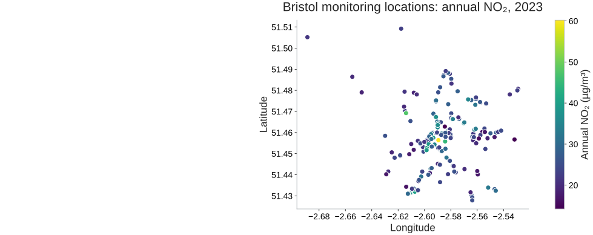
Annual NO₂ and hourly traffic counts have different temporal and spatial units. A defensible joint analysis requires an explicit matching design.
Bristol NO₂ measurements, 2023, reused from Weeks 7–8. Provenance in data/source-notes.md.
Reference: categorical and ordinal data
Income bands such as “below £30,001”, “£30,001–40,000”, “£40,001–50,000” and “£50,001 or above” are ordered categories.
Codes 1, 2, 3 and 4 represent those categories; they are not the actual incomes.
A film’s genre and age rating form two categorical variables. Cross-tabulations count combinations; percentages need a stated row, column or overall denominator.
Keep ordinal categories in meaningful order. A bar chart of group means instead summarises a numeric variable within categories.
Reference: chart caveats
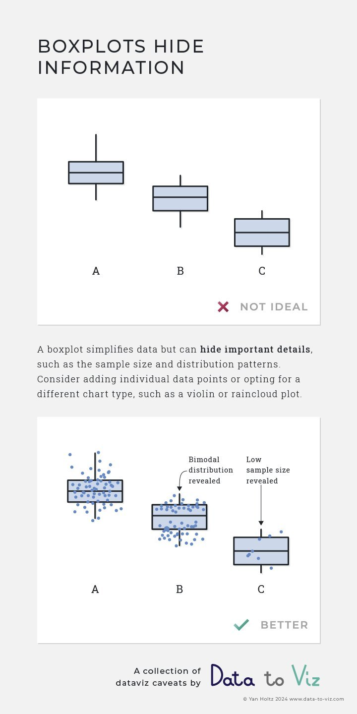
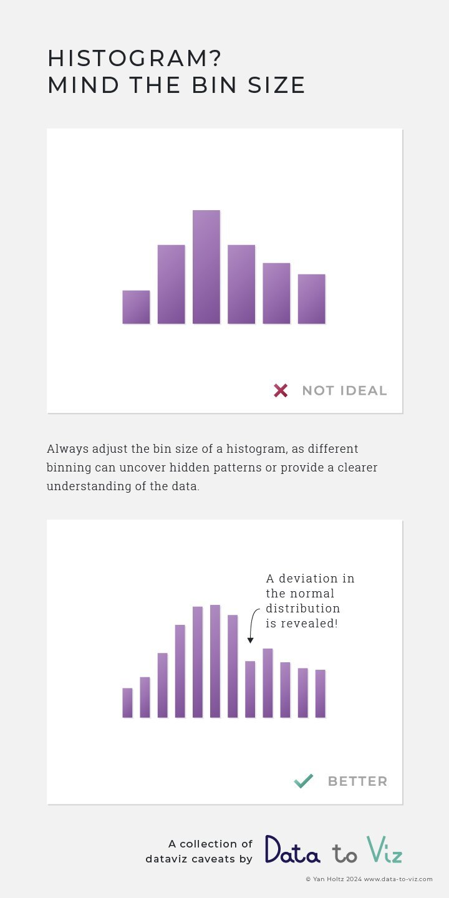
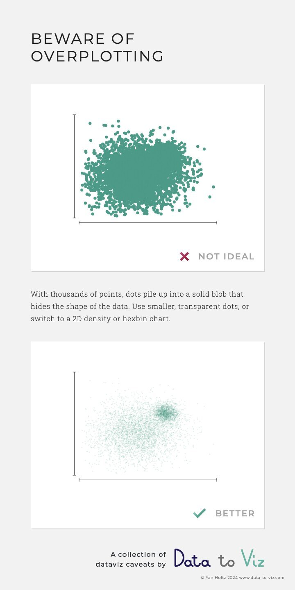
Original flashcards: Yan Holtz, 61 Dataviz Caveats, Data to Viz . See the linked gallery for readable originals.
Sources and further reading
Illustrative examples are labelled. Source data and teaching transformations are documented alongside the deck.